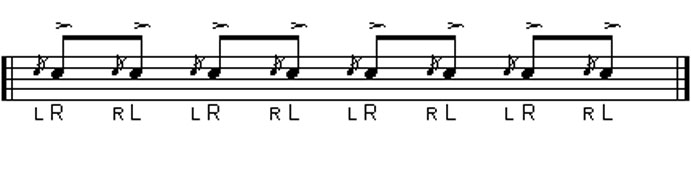
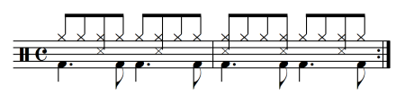

Just like athletes, musicians also need to warm up. So take 5 minutes to stretch your arms and get them moving. Once you feel warmed up, scroll down to the next section to get shedding!
Warm Up
Rudiments
As the name suggests, learning rudiments will give you a foundational level of technique at the drums. Practicing these cool sticking combinations and working them up to speed is a sure fire way to get those blazing fast chops you've always wanted.
- Double Strokes
- Paradiddles
- Flams 


Styles
Learning different styles of music will keep you well rounded as a musician and give you fresh new ideas to play around with.
- Rock Groove
- Shuffle
- Bossa Nova 


Grooves
Learning to play other drummers' parts is a great way to see how different styles are implemented in real situations. Check out these classic grooves by some of the masters of the drums.
- 50 Ways to Leave Your Lover (Paul Simon) - Steve Gadd
- What I Say (Ray Charles) - Milt Turner
- Fool in the Rain (Led Zepplin) - John Bonham